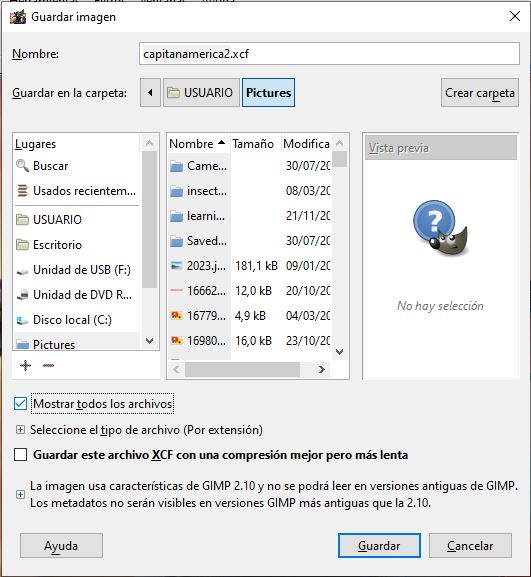

Guardar una imagen
Una vez terminada la creación o edición de una imagen, o cuando se ha acabado la sesión de trabajo, debemos guardar la imagen. De esta forma podremos abrir esa imagen en GIMP en otro momento y seguir editándola o trabajando con ella.
GIMP guarda las imágenes en un formato propietario que es xcf y que solo puede ser manejado con este programa. Es decir, cuando guardamos una imagen y le ponemos un nombre, el programa le añadirá la extensión .xcf
De esta forma se guardan las capas y otras características que necesita saber GIMP para poder abrir esta imagen en el futuro y poder seguir trabajando con ellas.
Para guardar una imagen accedemos al menú Archivo -> Guardar o Guardar como...

Al guardar una imagen debemos indicar un nombre para la imagen, así como elegir la carpeta dónde queremos guardarla.